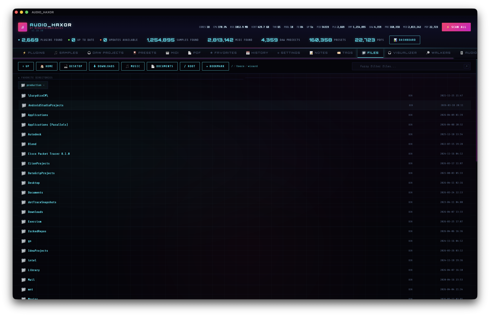

13.Files browser — Cmd+0
A raw filesystem window with breadcrumbs, quick-nav, directory bookmarks, lazy-rendered waveforms for audio files, and native drag-out to any app. Not a scanned inventory — a direct view.

Navigation
The header carries a full toolbar (frontend/js/file-browser.js):
- Up —
fileUp. Parent directory. - Home —
fileHome. Jumps toget_home_dirresult. - Quick nav buttons —
fileQuickNavwithdata-dir="Desktop",Downloads,Music,Documents. One click, one IPC call, one directory switch. - Bookmark —
btnFileFav. Toggles the current directory in your favorite-directories list (fileFavs). - Breadcrumb —
fileBreadcrumb. Each crumb is a clickabledata-file-navlink — jump straight to any ancestor.
Search & filter
Above the list: fuzzy search (fileSearchInput) with the regex toggle (regexFiles). Matches are highlighted and the list paginates in chunks of FILE_LIST_CHUNK = 80 rows to keep the scroll buffer snappy even in huge directories. A monotonic _fileListRenderSeq invalidates stale renders so switching directories mid-render never shows the wrong listing.
Bookmarked directories
The Favorite Directories strip (#fileFavs) sits above the list when you have any bookmarks. Each bookmark is a chip:
- Folder icon + directory basename (
.fav-chip-name) - Remove button (
data-remove-fav-dir)
Click a chip to jump straight there. The grid is compact — meant for the 4–8 directories you touch every day.
File list rows
Each file row is built by buildFileListRowHtml() (~line 198 of file-browser.js). Columns shown:
- Icon —
.file-icon, chosen by extension: 📁 folder, 🎵 audio, 🎛 DAW, ⚡ plugin, 📄 PDF, etc. - Mini waveform — for audio files, a
.file-waveformcanvas lazy-loaded by anIntersectionObserver(_fbWfObserver). The canvas decodes a few hundred peaks and draws an inline waveform strip. - File name — with search highlight.
- Extension chip — or "DIR" for directories.
- File size.
- Modified date.
- Meta badges — star (if favorited), note icon, tag pills, plus cached BPM / key / duration badges for audio files whose analysis is already in the cache. So scanned and un-scanned files look identical if they've been analyzed before.
Row actions
- Single click — select the row.
- Double click — for directories, navigate into them. For files, open in the default OS app via
open_file_default({ filePath }). - Right click — context menu: Open with..., Reveal, Rename, Delete, Copy path, Favorite, Add note, Tag.
Rename / delete work via rename_file({ oldPath, newPath }) and delete_file({ filePath }). Open with... calls open_with_app({ filePath, appName }) and honors your system's default app list.
Native drag-out
frontend/js/native-file-drag.js. Files can be dragged into any other native application — a DAW, Finder, Terminal, Dropbox, you name it. Detection is pointer-based:
pointerdownon a row arms the drag.pointermovewith a delta > 8 px² triggersstartNativeFileDrag().- The drag cursor shows a custom 128×128 cyberpunk drag icon (neon border, scanlines, spectrum bars, generated on the fly in ~line 21–143).
- Drop anywhere outside the app to copy the file there (mode is always copy — read-only for the source).
If the dragged row is part of a batch selection (via checkbox), every selected path is dragged at once. This works in every inventory tab, not just the Files browser — the drag machinery is shared with Samples, DAW, Presets, MIDI, PDF, Plugins, Favorites, and Notes rows.
IPC surface
fs_list_dir({ dirPath })— list entries in a directory.delete_file({ filePath })rename_file({ oldPath, newPath })read_text_file({ filePath })/write_text_file({ filePath, content })open_file_default({ filePath })open_with_app({ filePath, appName })get_home_dir()